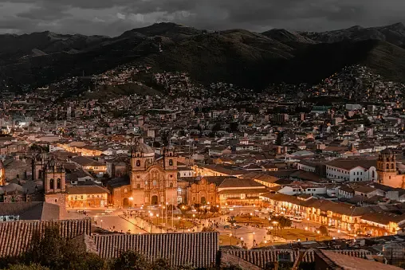
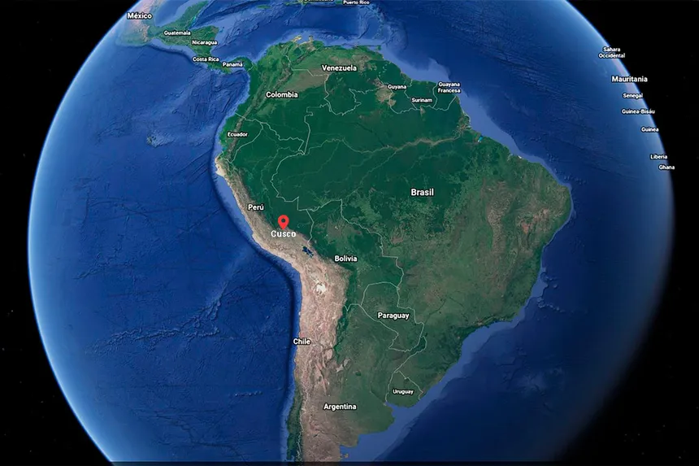

La Ciudad de Cusco
fue la capital política, administrativa y religiosa del Tahuantinsuyo. En el siglo XV, el Inca Pachacuteq rediseñó su traza urbana convirtiéndola en un
gran complejo urbano que perduró como la principal ciudad del imperio hasta el siglo XVI, cuando fue transformada nuevamente por los españoles. Esta segunda transformación consistió en mantener la traza y edificios incas sobre los cuales se erigieron templos y casas señoriales, tales como el Templo de Santo Domingo en el Qoricancha o la Catedral del Cusco en el Quishuarcancha, propiedad del inca Wiracocha, entre otros inmuebles de gran importancia y valor durante el Tahuantinsuyo. Cusco conserva en la arquitectura de sus edificaciones y diseño urbano extraordinarias expresiones constructivas de ambas culturas, manteniendo su autenticidad e integridad, a pesar del acelerado crecimiento de la ciudad.

Se encuentra al sureste del Perú, en la vertiente oriental de la cordillera de los Andes, en la cuenca
del río Huatanay, afluente del Vilcanota. Fue fundada en el siglo XIII por los incas y se creó como la capital del Imperio Inca.
Cusco es la capital del departamento del Cusco,
en Perú. Además, Cusco es considerada como la capital histórica del Perú.
Es uno de los principales destinos turísticos del Perú, pues cuenta
con una variedad de lugares turísticos, patrimonio arquitectónico, museos,
monumentos e iglesias. Desde 1983, Cusco fue declarada como Patrimonio de la Humanidad.